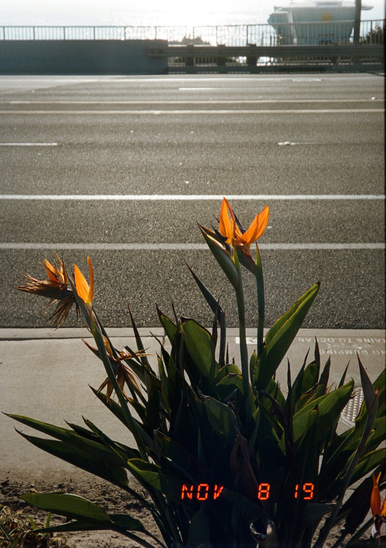
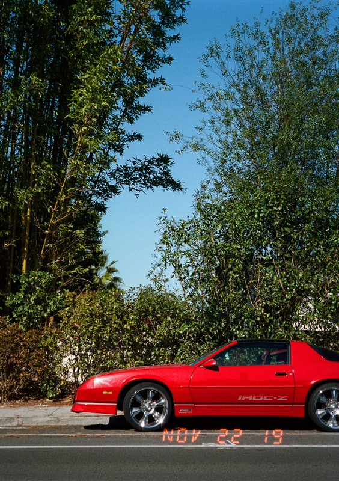
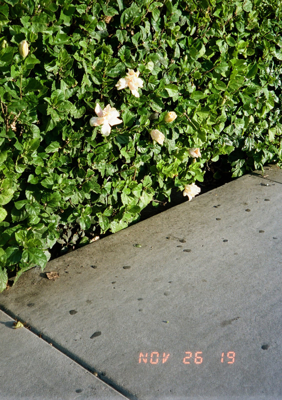
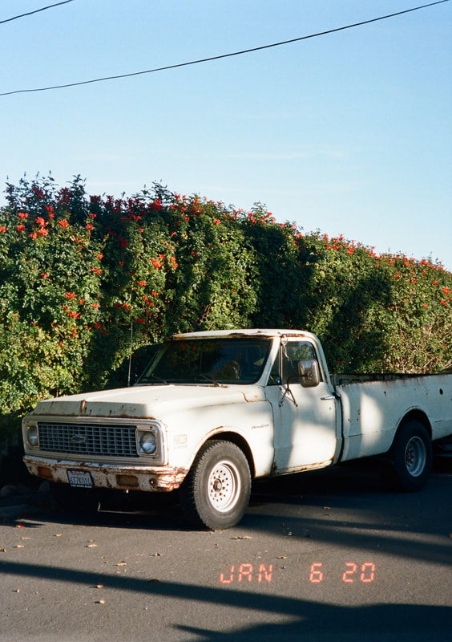
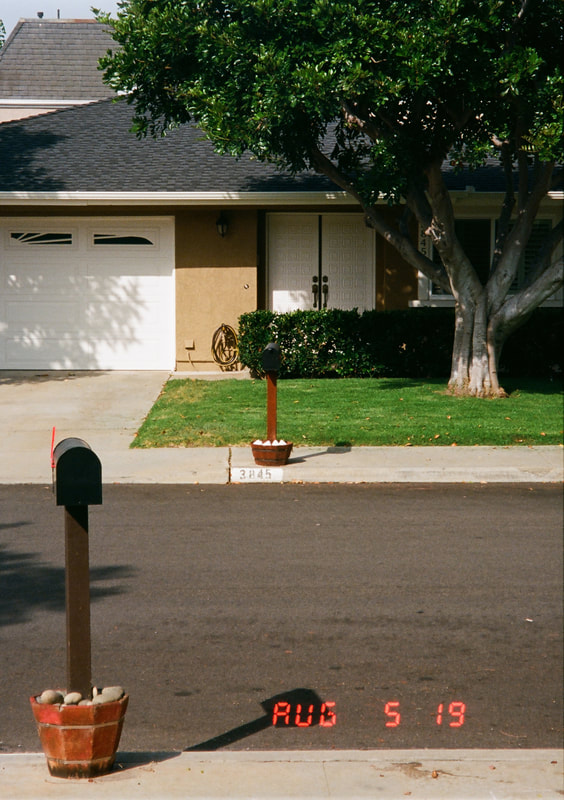
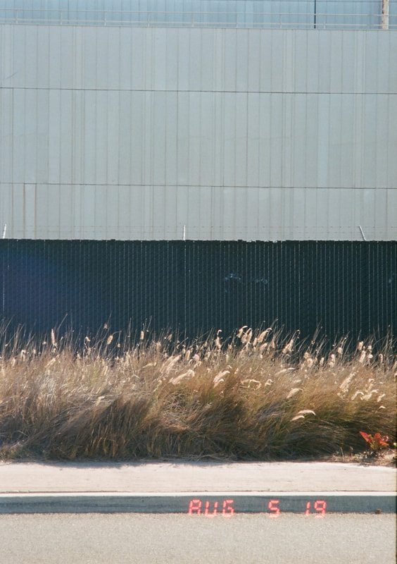

My go-to camera for over a year. Full auto, two focal lengths, fits in a pocket. There is simply nothing else like it.

The Canon Auto Tele 6 was a camera I had wanted for a long time. I had seen multiple people take some amazing pics with it and wanted to give it a try. Plus it would be one of the only fully automatic cameras I owned. So I sought out a winner on eBay and clicked purchase.
This baby is built like a typical 80s point and shoot... shaped like an old checkbox with rounded corners, made of durable black plastic, with a loud shutter and an even louder film advance. What makes it truly unique: it can move between half frame and full-frame modes, and has two focal lengths at 35mm and 60mm. There is also a date stamp and self timer.
In use it is as simple as any point and shoot from the era. Load film, the camera reads the DX code, half-press to focus, press all the way to shoot. If you are too far from the subject, flick a switch to zoom to 60mm. My only real fault is the loud motor advance and the inability to manually set ISO... easily worked around by taping over the DX code.
The shots with this camera are quite good. The lens is sharp with a nice pop. Auto exposure is almost always spot-on. The ability to flip between 35mm and 60mm allows you to capture 90% of anything you need. This has been my go-to camera for the last year and a half and the one I do not leave home without.
As an eBay Partner, I may earn a commission from qualifying purchases.




